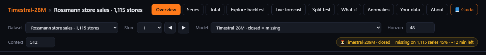
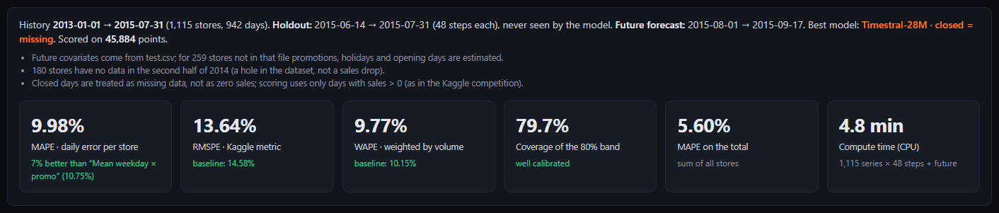
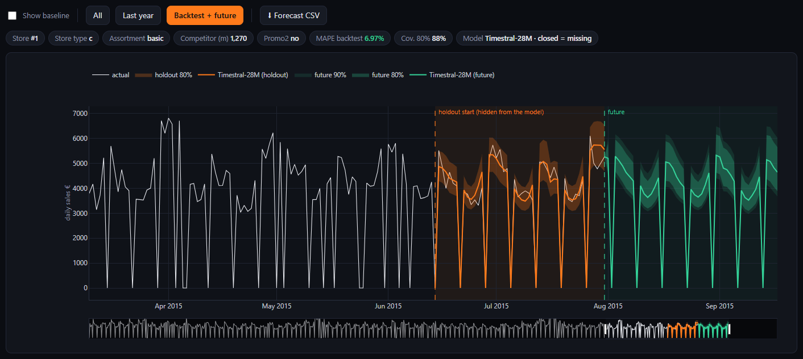
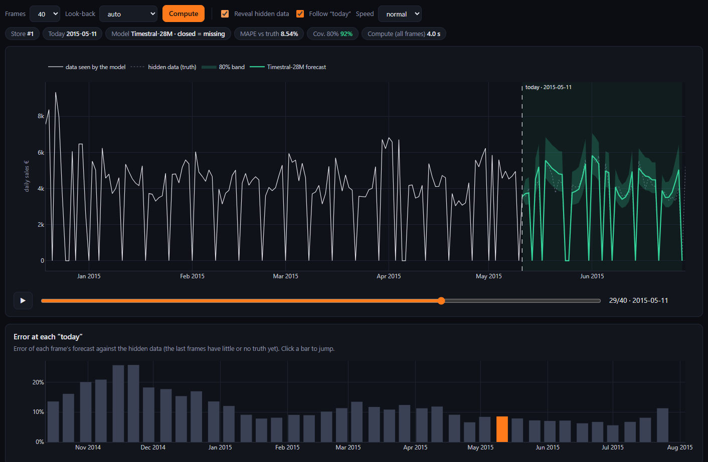
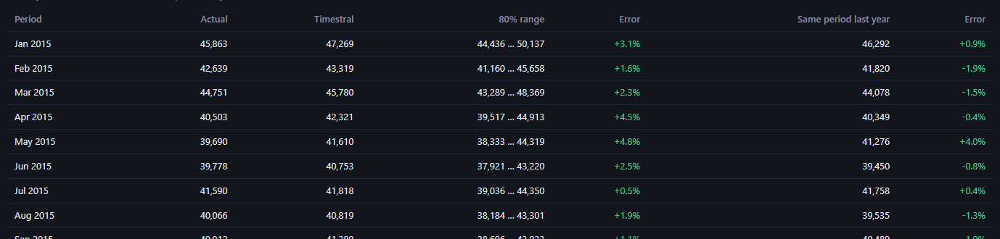
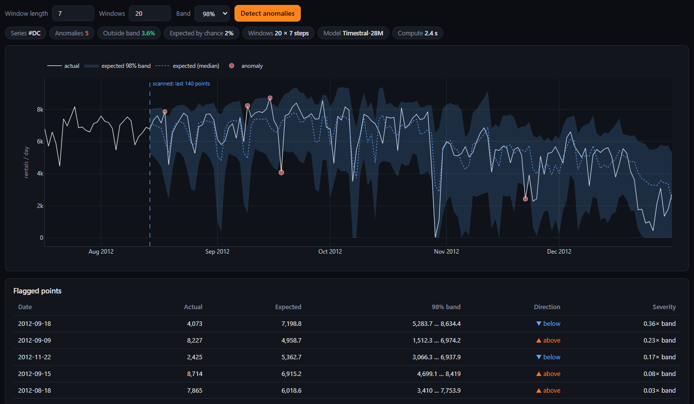

Demo Timestral
come si usa, pagina per pagina
Per chi non è tecnico e non mastica il linguaggio “da business”. Niente formule: solo cosa vedi sullo schermo, cosa vuol dire e cosa puoi cliccare.
È come le previsioni del tempo, ma per i numeri dell’azienda. E come per il meteo, non dice solo “domani 20 gradi”: dice anche “quasi sicuramente tra 17 e 23”. Quella forchetta è la parte più utile.
🔗 Come si apre
Indirizzo: http://localhost:8000/
🎨 I colori: la legenda che vale ovunque
Ogni grafico usa sempre gli stessi colori. Imparati questi, sai leggere tutte le pagine.
🎛️ La barra in alto (sempre visibile)

- Le pagine (le linguette): Overview, Series, Total… Clicca per cambiare pagina. La pagina in cui sei è arancione.
- Dataset = quale raccolta di dati. Ci sono già esempi pubblici (vendite di 1.115 negozi Rossmann, consumi elettrici, noleggi bici, temperature…) e qui compaiono anche i dati che carichi tu.
- Store / Series = quale negozio (o prodotto, o città). Appare solo se nei dati ce ne sono tanti.
- Frecce ◀ ▶ = negozio precedente / successivo, per sfogliarli uno alla volta.
- Model = quale versione del cervello. Il numero (5M, 28M, 123M, 209M) indica la grandezza: più grande = di solito più preciso ma più lento. Le scritte dopo il nome dicono come è stato usato: no covariates = senza informazioni di contorno; closed = missing = i giorni di chiusura considerati “vuoti” e non “zero vendite”. Le voci con not computed non sono ancora state calcolate: sceglierle avvia il calcolo.
- Horizon = quanti giorni (o ore, o mesi) nel futuro prevedere. Cambiarlo rifà i calcoli.
- Context = quanto passato far leggere al modello (0 = tutto). Di solito non serve toccarlo.
- Pillola gialla ⏳ = un calcolo è in corso in sottofondo: mostra la percentuale e i minuti mancanti. Le pagine si aggiornano da sole quando finisce.
📊 Overview – “il modello funziona?”
Quando usarla: per primo, per avere la risposta in 30 secondi.
In alto: il riassunto e i 6 numeri chiave

- La frase di riassunto: quali date ha visto il modello, quale periodo è stato nascosto (Holdout), fin dove arriva la previsione futura e quale versione è andata meglio.
- Note su come sono trattati i dati (es. buchi nei dati, giorni di chiusura).
- Errore medio (MAPE): di quanto sbaglia in media, in percentuale. 9,98% = su un giorno da 1.000 € sbaglia in media di circa 100 €. Sotto, in verde, di quanto è migliore della regola semplice più brava.
- Secondo modo di misurare l’errore (RMSPE, quello della gara Kaggle): punisce di più gli errori grossi. Più basso = meglio.
- Errore sul volume totale (WAPE): somma di tutti gli errori diviso il venduto totale. È il punto di vista “quanto ho sbagliato sul fatturato”.
- Affidabilità della fascia (Coverage of the 80% band): quante volte il valore vero è caduto dentro la fascia. Deve essere vicino all’80%: molto meno = il modello è troppo sicuro di sé; molto di più = è troppo prudente.
- Errore sul totale (es. tutta la catena): sommando tutti i negozi gli errori in parte si compensano, quindi è più basso.
- Tempo di calcolo su questo normale PC, senza scheda grafica.
Al centro: la classifica

- Il vincitore 🏆 (riga evidenziata). Le righe arancioni sono Timestral, le altre sono le regole semplici.
- Una regola semplice, per esempio Mean weekday × promo = “media dello stesso giorno della settimana, con o senza promozione”. Servono a capire se il modello aggiunge valore.
- Le colonne sono modi diversi di misurare l’errore: per quasi tutte più basso = meglio. Il significato di ognuna è nel capitolo Parole difficili.
- Numero verde = il migliore di quella colonna.
- Aggiungi al confronto: clicca un bottone ▶ per calcolare un’altra versione del modello (es. la 209M, più grande). Parte in sottofondo; la pillola gialla in alto mostra l’avanzamento.
In basso: dove sbaglia

- Errore per passo: quanto sbaglia prevedendo 1 giorno avanti, 2 giorni, … fino all’ultimo. Di solito più è lontano, più sbaglia.
- Distribuzione per negozio: ogni barra conta quanti negozi hanno quell’errore. Più la “montagna” arancione è a sinistra, meglio è.
- Errore per giorno della settimana: per esempio la domenica è più difficile.
- Calibrazione: controlla se le fasce sono oneste. Se la linea arancione sta sulla diagonale tratteggiata, “80%” vuol dire davvero 80%.
- Errore per gruppo (es. tipo di negozio). Dal menu a destra scegli il raggruppamento.
- Negozi migliori e peggiori. Clicca una riga per aprire quel negozio nella pagina Series.
🏪 Series – un negozio alla volta
Quando usarla: per mostrare a qualcuno un esempio concreto (“guarda il negozio 1”). Cambi negozio con le frecce ◀ ▶ in alto.

- Show baseline = mostra la regola semplice (linea grigia tratteggiata) per confrontarla con il modello.
- All / Last year = mostra tutto lo storico o solo l’ultimo anno.
- Backtest + future = zoom sulla parte interessante: la prova sul passato e il futuro (vista consigliata).
- Forecast CSV = scarica la previsione in un file che si apre con Excel (data, valore previsto, minimo e massimo della fascia).
- Le etichette: numero del negozio, caratteristiche (tipo, assortimento, distanza dal concorrente…), errore su questo negozio e affidabilità della fascia.
- La legenda dei colori del grafico. Cliccando una voce la nascondi o la mostri.
- Zona arancione = il periodo nascosto al modello. Linea bianca = come è andata davvero; linea arancione = cosa aveva previsto. Più sono vicine, meglio è.
- Zona verde = il futuro previsto, con la fascia scura (8 volte su 10) e quella più chiara (9 volte su 10).
- Mini-mappa: trascina i bordi per scegliere il periodo da guardare.

- Le informazioni di contorno (Covariates) date al modello: vacanze scolastiche, festività, promozioni, apertura… Sono cose che si sanno in anticipo (sai già quando farai una promo o quando chiudi). Le barre blu indicano i giorni “sì”; quelle sbiadite sono stimate.
- La pagella di questo negozio: le stesse misure dell’Overview, solo per lui.
➕ Total – tutta la catena insieme

- Due modi di prevedere il totale: bottom-up (arancione/verde) = prevedo ogni negozio e poi sommo; direct (viola tratteggiato) = prevedo direttamente il totale.
- Zona arancione = periodo nascosto, per confrontare con la realtà (linea bianca).
- Classifica sul totale: chi sbaglia meno sul totale della catena.
⏪ Explore backtest – la macchina del tempo
Quando usarla: per far vedere “dal vivo” come ragiona il modello, è la pagina più spettacolare in una presentazione.

- Frames = quanti “oggi” preparare (20, 40, 80). Più sono, più il movimento è fluido, ma il calcolo dura di più.
- Look-back = quanto indietro parte il viaggio nel tempo (auto va bene).
- Compute = prepara la macchina del tempo (pochi secondi). Va premuto una volta.
- Reveal hidden data = mostra anche cosa è successo davvero dopo “oggi” (linea grigia a puntini), per verificare.
- Follow “today” = il grafico segue il giorno scelto invece di mostrare tutto il periodo.
- Speed = velocità della riproduzione.
- ▶ Play / ❚❚ Pausa: fa scorrere il tempo.
- Cursore: trascinalo per scegliere tu il giorno “oggi”. A destra vedi la data.
- Errore per ogni “oggi”: barra alta = quella volta ha sbagliato di più. Clicca una barra per saltare a quel giorno.
⚡ Live forecast – una previsione al volo

- Forecast from = da che giorno partire (vuoto = dall’ultimo giorno disponibile, cioè il vero futuro).
- Forecast = calcola.
- End of data = prevedi il vero futuro, dall’ultimo dato esistente.
- − 1 horizon = torna indietro di un periodo (es. 48 giorni) e riprova: utile per fare tante prove di fila.
- Random date = una data a caso: buono per dimostrare che non è “truccato” su un giorno scelto apposta.
- Il risultato: errore rispetto alla realtà, affidabilità della fascia e Bias (+ = ha previsto troppo, − = troppo poco).
- Linea tratteggiata bianca = il giorno da cui parte la previsione. A destra: verde = previsione; grigio a puntini = com’è andata davvero.
✂️ Split test – “gli do 2 anni, indovina gli altri 3”
Quando usarla: per capire fin dove ci si può fidare (1 mese? 1 anno? 3 anni?). Funziona meglio con dati lunghi: prova Germany electricity o Melbourne temperature, o i tuoi.

- Data from = da quando partono i dati da usare.
- Model sees until = fino a quando il modello può guardare. Dopo questa data è tutto nascosto.
- Forecast until = fino a quando deve prevedere.
- Run split test = avvia il test con le date scelte.
- Scorciatoie: 5 years: 2 → 3 riempie da solo le date (5 anni, 2 visti, 3 da prevedere). Ci sono anche 1→1, 3→1 e 1 anno → 3 mesi.
- Show best simple rule = mostra/nasconde la regola semplice migliore (linea gialla a puntini).
- Il riassunto: quanto ha visto, quanto ha previsto, il suo errore (rosso se una regola semplice ha fatto meglio) e quello della regola migliore.
- La linea di taglio: a sinistra (bianco) quello che il modello ha visto, a destra la previsione (verde) sopra la realtà (grigio).

- Errore anno per anno: la barra arancione (Timestral) cresce allontanandosi? Vuol dire che più lontano guarda, meno è preciso: è normale.
- “Come l’ha fatto” spiegato a parole: quanto ha visto, quanto ha dovuto prevedere, come allarga il margine col tempo e il verdetto finale.
- La classifica sul periodo nascosto: chi ha sbagliato meno.

- Errore del modello mese per mese: verde = sotto il 5%, rosso = oltre il 15%. “+” = ha previsto più del reale, “−” = meno.
- Errore della regola semplice nello stesso mese, per confronto.
🎚️ What-if – “e se…?”
Quando usarla: “se facciamo la promo tutte le settimane quanto vendiamo in più?”, “se chiudiamo la prima settimana quanto perdiamo?”.

- Scenari pronti: un clic e parte (es. “promo tutti i giorni feriali”, “nessuna promozione”, “chiuso la prima settimana”).
- Cosa fare su questa informazione: keep = lascia com’è; set to = imposta un valore; shift by = aggiungi/togli (es. +5 gradi); scale × = moltiplica (es. ×1,2 = +20%).
- Il valore: per sì/no, 1 = sì e 0 = no.
- Quali giorni: da “passo” a “passo”, contando dal primo giorno di previsione (0 = il primo giorno, 7 = una settimana dopo).
- Run scenario = calcola lo scenario con le tue scelte.
- Reset = torna alla situazione normale.
- Il risultato in numeri: totale previsto normale, totale con lo scenario e la differenza (in valore e in %).
- Legenda: verde = base, viola = scenario. Sotto il grafico vedi anche quali informazioni hai cambiato.
🚨 Anomalies – i giorni strani

- Window length = lunghezza di ogni piccola previsione (es. 7 giorni).
- Windows = quante farne all’indietro (20 × 7 giorni = circa 5 mesi controllati).
- Band = quanto essere severi. 98% = segnala solo le cose davvero fuori dal normale; 90% = più sensibile, segnala di più.
- Detect anomalies = avvia la ricerca.
- Il riassunto: quanti giorni strani, e la percentuale fuori fascia rispetto a quella “normale per caso” (circa 2% con la fascia al 98%).
- Pallino rosso = un giorno anomalo; più è grande, più è strano.
- L’elenco, dal più strano: data, valore vero, valore atteso, la fascia e se era sopra ▲ o sotto ▼.
📤 Your data – provare con i nostri numeri
Come preparare il file (in Excel)

- Trascina qui il file o cliccaci sopra per sceglierlo.
- Anteprima: le prime righe, per controllare che sia il file giusto.
- Name = il nome con cui comparirà nel menu Dataset.
- Date column = quale colonna è la data (di solito la trova da solo).
- Series ID column = quale colonna dice di chi è la riga (negozio, prodotto). Lascia “single series” se il file ha un solo andamento.
- Forecast this = il numero da prevedere.
- Le altre colonne: ignore = non usarla; past only = si conosce solo a posteriori (es. clienti entrati); known in advance = si sa prima (promo, apertura, prezzo di listino). category = è un sì/no o un codice, non una quantità.
- Frequency = ogni quanto c’è un dato (giornaliero, settimanale, mensile…). auto-detect = lo capisce da solo.
- Season / horizon = lunghezza del ciclo (7 = settimana per dati giornalieri) e quanti passi prevedere. Lasciare auto va benissimo.
- Totals per period = per i riepiloghi mensili: somma (vendite, pezzi) o media (prezzi, temperature).
- Calendar features = aggiunge da solo giorno della settimana e mese come informazioni note. Lascialo acceso.
- Public holidays = aggiunge le festività del paese scelto (IT = Italia).
- Load dataset = carica. Si apre l’Overview: la pillola gialla mostra il calcolo in corso (secondi per pochi negozi, minuti per centinaia).
🗺️ Percorsi guidati: “voglio…”
✅ …capire in 2 minuti se funziona
🏪 …mostrare un negozio a un collega
🎬 …fare una dimostrazione “dal vivo”
✂️ …fare la prova “2 anni visti, 3 da indovinare”
🏷️ …sapere quanto vale una promozione
📤 …provare con i nostri dati
🚨 …trovare giorni anomali
📖 Parole difficili, spiegate semplici
| Forecast | Previsione. |
| Holdout / backtest | Il periodo nascosto al modello per metterlo alla prova, come un compito in classe di cui l’insegnante conosce già le risposte. |
| Baseline | Una regola semplice usata come metro di paragone (es. “come la settimana scorsa”, “come lo stesso giorno dell’anno scorso”). |
| MAPE | Errore medio in percentuale, giorno per giorno. 10% = in media sbaglia di un decimo. Più basso = meglio. |
| WAPE | Errore sul volume totale: quanto ho sbagliato in tutto rispetto a quanto ho venduto in tutto. Più basso = meglio. |
| RMSPE | Come il MAPE ma pesa di più gli errori grossi (è la misura della gara Kaggle Rossmann). |
| sMAPE | Variante “simmetrica” del MAPE. Più basso = meglio. |
| MASE | Confronto con la regola “ripeti l’ultimo ciclo”: sotto 1 = meglio della regola, sopra 1 = peggio. |
| MAE / RMSE | Errore medio nell’unità dei dati (es. euro al giorno). RMSE pesa di più gli errori grossi. |
| Bias | Tendenza: + = prevede sempre un po’ troppo; − = sempre un po’ troppo poco. Vicino a 0 = equilibrato. |
| Coverage 80% (Cov. 80%) | Quante volte il valore vero è caduto nella fascia. Ideale ≈ 80%. |
| Width 80% | Quanto è larga la fascia rispetto ai valori: stretta = preciso, larga = prudente. |
| WQL | Voto all’intera fascia, non solo alla linea centrale. Più basso = meglio. |
| Covariates | Informazioni di contorno date al modello: promo, aperture, festività, meteo… |
| Known in advance | Informazioni che si sanno prima (il calendario promo, le chiusure programmate). |
| Past only | Informazioni che si sanno solo dopo (es. clienti entrati ieri). |
| Closed = missing / = 0 | Come trattare i giorni di chiusura: “vuoti” (consigliato) oppure “zero vendite”. |
| Bottom-up / direct | Totale ottenuto sommando le previsioni dei singoli negozi / prevedendo direttamente il totale. |
| Horizon | Quanto avanti prevedere. |
| Context | Quanto passato far leggere al modello. |
| Zero-shot | Il modello non viene “addestrato” sui vostri dati: li legge e prevede subito, come una persona esperta che vede un grafico per la prima volta. |
| 5M · 28M · 123M · 209M | Grandezza del modello (milioni di “parametri”). Più grande = di solito più preciso, ma più lento. |
💬 L’assistente AI (facoltativo)
🛟 Se qualcosa non va
| La pagina non si apre | La board è avviata? Avviala con start.cmd (Windows) o ./start.sh (Linux) e lascia aperta la sua finestra. |
| Chiede utente e password | È normale: il sito è protetto. La prima password compare al primo avvio della board. Dimenticata? Impostane una nuova con python -m j_forecast_board password (vedi il README). |
| “Timestral is evaluating…” | È il primo calcolo per quei dati: aspetta, la pillola gialla in alto mostra i minuti mancanti. Poi resta salvato e la volta dopo è istantaneo. |
| Un bottone non fa nulla | Guarda se compare un riquadro rosso in basso a destra con il messaggio d’errore; spesso indica cosa correggere (es. “too many steps”). |
| Il modello 209M è lentissimo | È normale su questo PC senza scheda grafica: per 1.115 negozi servono circa 20–25 minuti. Per le prove usa il 28M. |
| Il mio file non viene letto bene | Controlla che ci sia una sola riga di intestazione, la data in una colonna sola e i numeri senza simboli (niente “€”). |
| I miei dati sono spariti | Dopo un riavvio del programma i file caricati vanno ricaricati (per scelta: non vengono salvati su disco). |